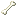

The Skeleton Wolf is an undead variant of the Wolf added by Earthify.
Behavior
- Hostile when untamed.
- Can be tamed using Bones.
- Attacks players when angered.
- Prefers Soul Sand and Soul Soil.
- Spawns only in darkness at Overworld.
Taming
Skeleton Wolves can be tamed using minecraft:bone.
Once tamed, they can be healed using minecraft:bone or minecraft:rotten_flesh.
Drops
|
 Bone |
0–2 |